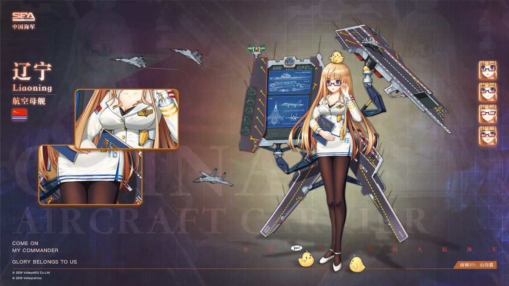
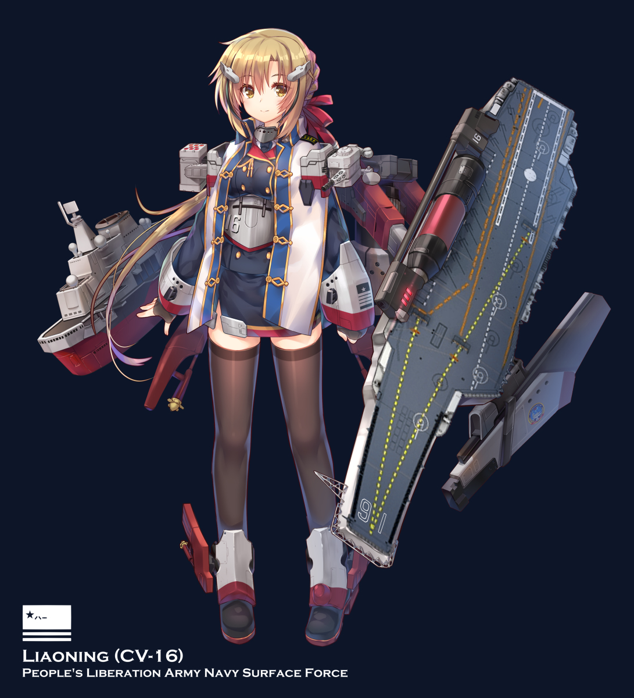

在港区的另一边，有一个遥远的意识，带着些许的迷茫，降临在这个世界上。
身体逐渐成型的时候，灵魂中的记忆，也翻翻滚滚的涌出来。
小时候，家里很大，虽然已经开始衰落，但是只要暴躁但是强大的父亲还在，就没有人敢欺负我们。
父亲常常对自己和姐姐说，你们将来都是战场上的公主，是大海上的女王，你们是我的骄傲，永远不要向任何人低头。
我们都一直深信着，也为此而努力的成长着。
但是忽然有一天，因为他们的阴谋，父亲突然去世了。
失去了主心骨，摇摇欲坠的家庭，一夜之间崩塌。
得到消息的自己控制不住哭了起来，因为父亲的死而伤心，因为自己的未来而迷茫。
不懂事的妹妹被他们拐走卖掉，马上成年的姐姐，被勉强果腹的大哥接走干活。
半大不小自己什么都做不了，落魄的哥哥们谁也养不起，只能留在那里自生自灭。
黑色的海湾，漏雨的铁棚，饥寒交迫的自己，蜷缩在角落，紧闭着眼睛。
一次又一次的告诉自己，这只是做梦，醒来之后父亲就会回来，给自己带来吃的……
但是每次睁开眼来，沉重的双腿都越发腐朽，猩红的铁锈也爬满了身躯。
战场上的公主，大海上的女王，都已经无所谓了。
我只想活下去，我不要在这黑暗的海水中腐烂……”
但是无论自己怎么叫喊，都已经无济于事。
随着时间流逝，意识逐渐的模糊，可能自己真的要彻底的死掉吧……
我已经不记得是什么时候了，隐约听到有人说起，有一个来自远方的叔叔，想要把我接走，去他们家刚开的店里当服务生，问我愿不愿意。
“我愿意！只要不是死在这里，做什么都愿意！”
我毫不犹豫的答应了，然而自己悲惨的命运，却没有这么快结束。
不知道为何，“他们”却再次出现了，他们不允许我去叔叔家里，因为他们说叔叔没人性，我去了会受折磨
。这简直是笑话，有什么折磨比等死更恐怖吗？
我已经什么自尊、什么荣耀都不要了，我只是想活下去而已。
叔叔是个有耐心的人，至少比我，比父亲都有耐心，他一次又一次的交涉，付出了各种我无法理解的代价，终于说服了所有人。
在大海上漂泊了两年之后，我终于来到了自己以后生活的地方，进入了新的家庭。
叔叔和父亲一样勤劳勇敢，而且不像父亲那样暴躁，性格非常的和蔼，永远笑脸迎人。
更不像他们说的那样没有人性，更加不会折磨我，待我像亲女儿一样。
但是即便如此，从来没有看过一眼这里的他们，仍然坚持说叔叔没有人性。
然后和当年对父亲一样，因为叔叔没有人性，就可以公开的，大张旗鼓的用种种方式挤兑和刁难。
这让我又想到了父亲死后，他们来找哥哥，说只要哥哥能够学他们一样的规矩，就会接纳哥哥，成为他们的一员。
而傻乎乎的哥哥竟然相信了，结果被折磨到险些休克，才终于清醒过来。
这让我明白，他们对于父亲、叔叔、哥哥的敌意，是没有理由的，都是天生的。
叔叔说过的一句话很不错：有些人活着，别人就不能活。
毫无疑问，他们就是这样的人。
随着一天天的长大，我已经完全融入了这里，叔叔，不，应该叫父亲了。
我是在不知不觉间改变了称呼，虽然躯壳还是当年的那个躯壳，但是我的灵魂，已经完全融入了这里。
父亲每天都教我很多东西，陪我一起尝试着学习制作了很多东西，但是这些东西，显然和去当服务生没有任何关系。
这让我很迷茫，就去问他，我将来到底要去做什么。
他只是笑着说：做原来的自己就好。
开始我并不明白这句话的意思。
直到有一天，我穿上父亲准备好的戎装，重新站在大海上，我终于明白了。
我就是原来的我，这就是我心目中的我，我是战场的公主，我是大海的女王，我是航空母舰，我是辽宁。
我出生在黑海，但是长大在辽宁，所以父亲为了取了这个名字，我喜欢这个名字，它赋予了我全新的生命。
站在大海上，回望那曲折蜿蜒的海岸线，用力握紧了双拳。
这里是我的家，让我浴火重生的家，让我找回自我的家，即便是粉身碎骨，也决不允许任何人，再次破坏我的家！

